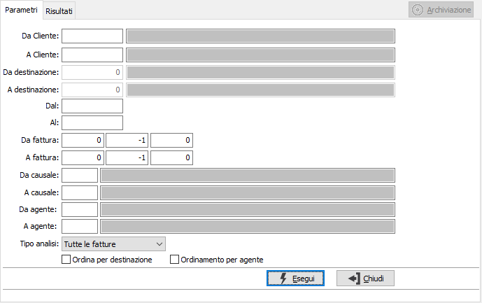
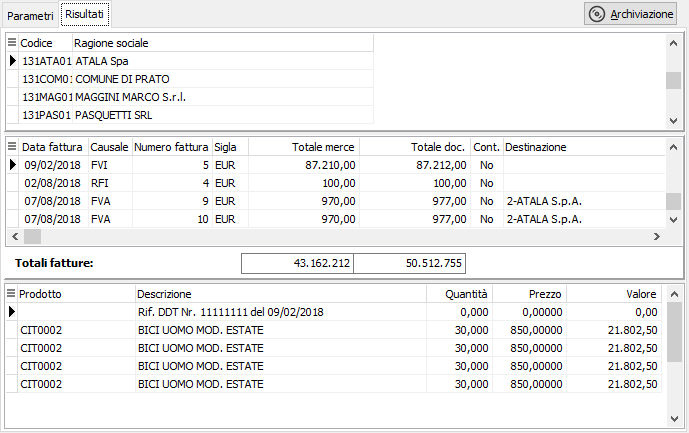
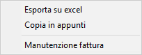

Analisi fatture
Il programma effettua la visualizzazione delle fatture esistenti in archivio in base ai parametri inseriti dall’utente.
E’ possibile visualizzare i documenti relativi ad una tipologia omogenea di fatture, e/o ad uno o più clienti entro limiti di data specificati.
E’ possibile selezionare solo le fatture da contabilizzare oppure tutte le fatture oppure solo le contabilizzate.
Il programma si articola su due finestre video. La prima, Parametri, consente la definizione dei parametri di analisi.

DA CLIENTE: eventuale codice del cliente, presente in anagrafica, da cui si vuole iniziare la selezione di analisi. Confermando a vuoto, la selezione inizia dal primo cliente valido. Sul campo sono attive le funzioni di ricerca (F9).
A CLIENTE: eventuale codice del cliente, presente in anagrafica, con cui si vuole terminare la selezione di analisi. Confermando a vuoto, la selezione termina con l'ultimo cliente valido. Sul campo sono attive le funzioni di ricerca (F9).
DA DESTINAZIONE: codice della destinazione del cliente, da cui si vuole iniziare la selezione di analisi. Confermando a vuoto, la selezione inizia dalla prima destinazione valida. Sul campo sono attive le funzioni di ricerca (F9).
A DESTINAZIONE: codice della destinazione del cliente, con cui si vuole terminare la selezione di analisi. Confermando a vuoto, la selezione termina con l'ultima destinazione valida. Sul campo sono attive le funzioni di ricerca (F9).
DA DATA: eventuale data del documento da cui deve iniziare l’analisi dei documenti relativamente ai precedenti parametri di selezione. Confermando a vuoto, l’analisi inizia con il primo documento valido.
A DATA: eventuale data del documento con cui si desidera terminare l’analisi dei documenti relativamente ai precedenti parametri di selezione. Confermando a vuoto, l’analisi si conclude con l'ultimo documento valido.
DA FATTURA: indicare anno, serie (-1 tutte), e numero da cui iniziare l'elaborazione.
A FATTURA: indicare anno, serie (-1 tutte), e numero con cui terminare l'elaborazione.
DA CAUSALE: codice della causale, da cui si vuole iniziare la selezione di analisi. Confermando a vuoto, la selezione inizia dalla prima causale valida. Sul campo sono attive le funzioni di ricerca (F9).
A CAUSALE: codice della causale, con cui si vuole terminare la selezione di analisi. Confermando a vuoto, la selezione termina con l'ultima causale valida. Sul campo sono attive le funzioni di ricerca (F9).
DA AGENTE: codice dell'agente, da cui si vuole iniziare la selezione di analisi. Confermando a vuoto, la selezione inizia dal primo codice valido. Sul campo sono attive le funzioni di ricerca (F9).
A AGENTE: codice dell'agente, con cui si vuole terminare la selezione di analisi. Confermando a vuoto, la selezione termina con l'ultimo codice valido. Sul campo sono attive le funzioni di ricerca (F9).
TIPO ANALISI: consente di selezionare per l'analisi le fatture da contabilizzare, quelle contabilizzate oppure tutte le fatture presenti.
ORDINA PER DESTINAZIONE: definisce se l'analisi deve essere impostata per cliente/destinazione.
ORDINAMENTO PER AGENTE: definisce se l'analisi deve essere ordinata per agente; l'ordinamento per agente ha priorità sull'ordinamento cliente/destinazione.
Confermando tramite pressione del bottone Esegui, viene avviata la selezione e richiamata la finestra video Risultati.

La finestra video è articolata su tre sezioni: nella sezione superiore sono presenti i clienti selezionati; la sezione centrale elenca i documenti elaborati in base alla selezione effettuata ed al cliente su cui si è posizionati nella sezione superiore.
La sezione inferiore elenca invece le righe relative al documento selezionato, che è quello contrassegnato dalla freccia, alla sinistra del rigo nella sezione centrale.

Tramite il tasto destro del mouse è possibile richiamare un menù per effettuare l'esportazione, della sezione su cui ci troviamo, su Excel oppure negli appunti, oppure entrare direttamente in manutenzione del documento; è anche possibile entrare direttamente in manutenzione del documento facendo doppio clic nella sezione superiore sul documento interessato.